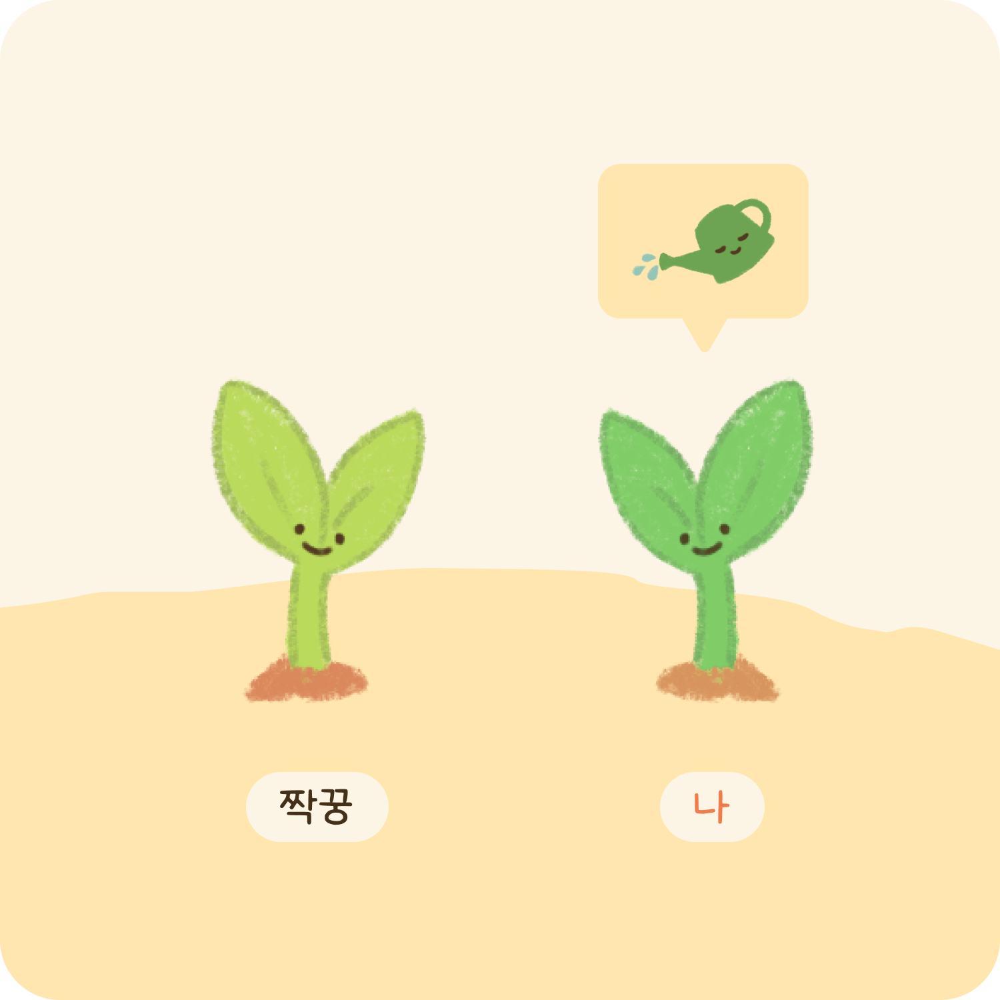

TwoToo 설명서 💖
안녕하세요! 너와 내가 함께 성장하는 과정, TwoToo입니다 :)
TwoToo는 연인과 함께하는 챌린지, 기록 앱입니다.
새로운 행동이 습관화되는데 최소 21일이 걸린다고 합니다. TwoToo는 최소한의 목표 달성 기간 22일을 기준으로 챌린지를 생성할 수 있습니다.
STEP 1
짝꿍과 함께 달성할 챌린지를 만들어 주세요
- 22일간 진행할 챌린지 내용을 입력해 주세요.
- 구체적인 룰, 벌칙 등을 함께 작성해 재밌는 챌린지를 만들어봐요.
- 투투에서 추천하는 챌린지를 시작해 봐도 좋아요.

서로에게 선물할 꽃을 골라주세요
- 챌린지를 입력할 때 서로에게 주고 싶은 꽃의 씨앗을 같이 보내요.
- 각자 서로에게 받은 꽃을 키우면서 챌린지를 종료했을 때 무슨 꽃인지 확인할 수 있어요.
짝꿍이 수락 버튼을 눌러야 챌린지를 시작할 수 있어요
- 투투는 양쪽 모두가 수락해야 챌린지를 시작할 수 있어요
- 만약 시작일이 지나도 수락하지 않는다면, 새로운 챌린지를 생성해야 해요.(시작일이 지나면 수락할 수 없으니 기간 내에 수락해 주세요!)
STEP 2

매일 한 번씩 꽃에 물을 주며 인증해 보세요
- 하루에 한 번 인증하기를 통해 꽃에 물을 줄 수 있어요.
- 인증을 진행할 때는 사진이 필수에요.

짝꿍이 인증을 안했다면 ‘콕 찌르기’를 통해 알림을 보내보세요
- 콕 찌르기는 하루 최대 5번만 할 수 있어요.
- 짝꿍에게 보내고 싶은 문구를 써서 알림을 보내보세요! ex) 짝꿍아 얼른 인증해♡
STEP 3
서로 인증을 완료하면 칭찬을 남겨보세요
- 짝꿍과 내가 모두 인증에 성공하면 서로의 인증에 칭찬을 남길 수 있어요.
- 상대방의 인증에 칭찬을 남겨봐요 ex) 오늘 하루도 고생했어ㅎㅎ
STEP 4
22일 챌린지를 완료해요
- 22일간 진행한 짝꿍과의 챌린지를, 다음날 완료하기 버튼을 눌러 챌린지를 완료해요.
- 80% 이상 인증했다면 짝꿍이 준 꽃을 볼 수 있답니다.
- 23일에 완료를 하면 챌린지 히스토리 페이지에서 조회할 수 있어요.
STEP 5

히스토리에서 지금까지 진행했던 챌린지를 살펴봐요
- 왼쪽 히스토리 탭에서 지금까지 진행한 챌린지를 볼 수 있어요
- 과거에 어떤 챌린지를 진행했고 어떤 마음으로 진행했는지 확인해 봐요